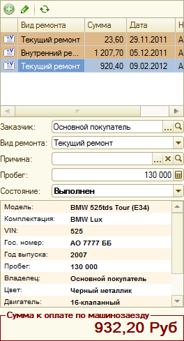

АРМ "Машинозаезд"
Назначение
Обработка предназначена для просмотра и редактирования заказ-нарядов, сгруппированных по машинозаездам автомобилей. Является инструментом для просмотра состояния выполнения работ по ремонтам, перемещения деталей по заказ-нарядам, приема оплат, формирования печатных документов и закрытия заказ-нарядов.
Относится к подсистеме: «Автоматизированные рабочие места».
Формы
Интерфейс "Машинозаезд"
Является основной формой АРМ. Форма состоит из следующих элементов:
- Выбор автомобиля и переход между машинозаездами
 Поле ввода служит для выбора автомобиля из справочника "Автомобили". При вводе в поле текста активизируется поиск автомобиля по следующим критериям: номер документа заказ-наряд, наименование заказчика, наименование автомобиля, VIN-код автомобиля, причина обращения, комментарий к заказ-наряду. Настройка критериев поиска осуществляется на форме настроек, которая вызывается по кнопке
Поле ввода служит для выбора автомобиля из справочника "Автомобили". При вводе в поле текста активизируется поиск автомобиля по следующим критериям: номер документа заказ-наряд, наименование заказчика, наименование автомобиля, VIN-код автомобиля, причина обращения, комментарий к заказ-наряду. Настройка критериев поиска осуществляется на форме настроек, которая вызывается по кнопке  справа от поля ввода. Под полем ввода отображается дата машинозаезда и кнопки переходов между другими машинозаездами автомобиля.
справа от поля ввода. Под полем ввода отображается дата машинозаезда и кнопки переходов между другими машинозаездами автомобиля.
Список заказ-нарядов содержит все заказ-наряды, которые входят в текущий машинозаезд. В поле может быть выбран один из заказ-нарядов, который будет загружен в АРМ в качестве текущего. Раскраска строк списка соответствует раскраске строк документов в формах списков документов «Заказ-наряд».
Ниже расположены основные реквизиты текущего документа:
- Заказчик. Обязательный для заполнения. Ссылается на справочник «Контрагенты и контакты». Заказчик выполнения работ по заказ-наряду.
- Вид ремонта. Обязательный для заполнения. Ссылается на справочник «Виды ремонта». Вид ремонта, который требуется произвести.
- Причина обращения. Причина обращения в ремонт.
- Пробег. Тип значения: «Число». Пробег автомобиля на дату начала работ по заказ-наряду.
- Состояние заказ-наряда. Обязательный для заполнения. Текущее состояние заказ-наряда.
В нижней части области отображается подробная информация об автомобиле и общая сумма всех заказ-нарядов, входящих в текущий машинозаезд.
 В правой части формы расположена детальная информация по текущему заказ-наряду: списки выполняемых работ, их исполнителей, деталей, используемых в процессе выполнения ремонта (в том числе и деталей заказчика), а так же дополнительная информация о плательщике, скидках и пр. Табличные части и реквизиты, раскраска строк идентичны данным на форме документа «Заказ-наряд».
В правой части формы расположена детальная информация по текущему заказ-наряду: списки выполняемых работ, их исполнителей, деталей, используемых в процессе выполнения ремонта (в том числе и деталей заказчика), а так же дополнительная информация о плательщике, скидках и пр. Табличные части и реквизиты, раскраска строк идентичны данным на форме документа «Заказ-наряд».
Содержит кнопки основных действия и контекстных переходов между АРМ.
Контекстные переходы к другим АРМ:
- «Клиенты и автомобили» В списке клиентов курсор будет спозиционирован на заказчике из текущего заказ-наряда, в списке автомобилей - на автомобиле из текущего заказ-наряда.
- «Калькуляция»
- Если найдена заявка на ремонт, на основании которой введен текущий заказ-наряд, то она будет загружена в качестве текущей в АРМ "Калькуляция". Перед открытием задается вопрос о перезаполнении на основании заказ-наряда. В случае подтверждения перезаполнения, данные реквизитов и табличных частей заказ-наряда замещают данные заявки на ремонт.
- Если не найдена заявка на ремонт, на основании которой введен заказ-наряд, то будет создана новая заявка на ремонт. В момент записи нового документа, в заказ-наряд будет подставлена заявка на ремонт в качестве документа-основания и документ также будет перезаписан.
- Если найдена заявка на ремонт, на основании которой введен текущий заказ-наряд, то она будет загружена в качестве текущей в АРМ "Запись на ремонт". Перед открытием задается вопрос о перезаполнении на основании заказ-наряда. В случае подтверждения перезаполнения, данные реквизитов и табличных частей заказ-наряда замещают данные заявки на ремонт.
- Если не найдена заявка на ремонт, на основании которой введен заказ-наряд, то будет создана новая заявка на ремонт. В момент записи нового документа, в заказ-наряд будет подставлена заявка на ремонт в качестве документа-основания и документ также будет перезаписан.
Основные действия:
- Пакетная печать. Печать документов текущего машинозаезда через форму пакетной печати.
- Записать. Запись и проведение документа.
- Закрыть. Закрыть форму.
Способ вызова
Открывается из обработки «Функциональная панель». Отдельно не используется.